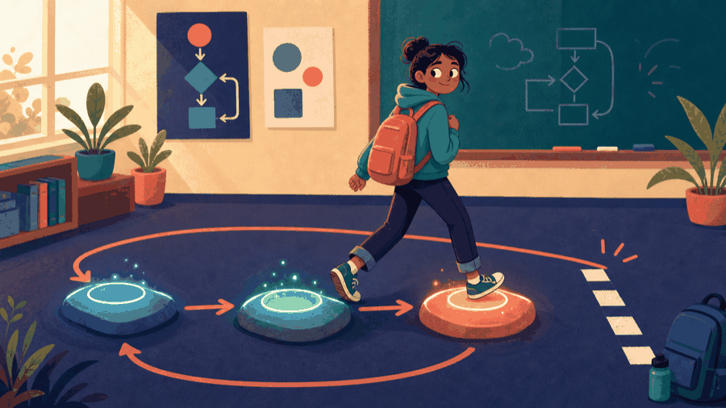
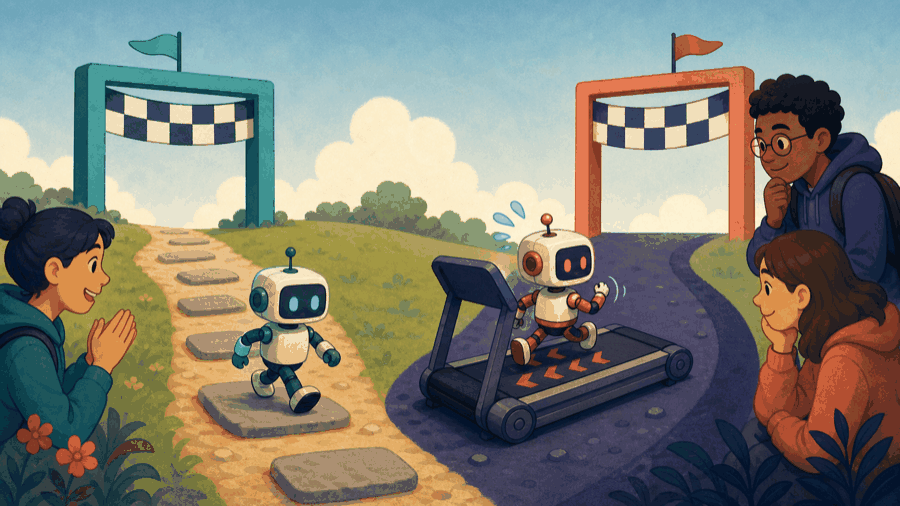
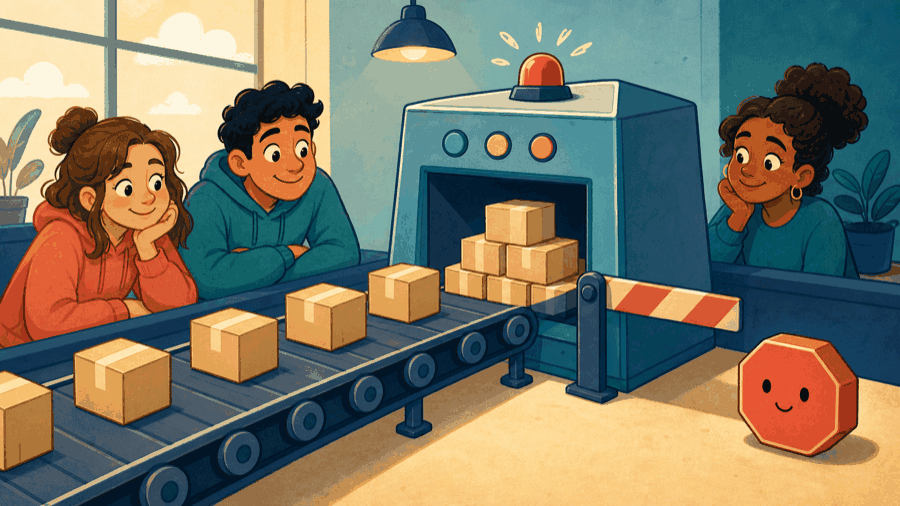

# Lecture 5: Make loop state progress toward termination ## while, do-while, progress, and stopping **Instructor:** [Dr. Debasish Pattanayak](https://drdebmath.github.io)
## while repeats while a condition stays true. · Production-line quality scan A loop processes repeated measurements, counts defects, and stops early if too many failures appear. ~~~cpp #include <iostream> int main() { int samples, defects = 0; std::cin >> samples; int i = 0; while (i < samples) { double diameter; std::cin >> diameter; if (diameter < 9.95 || diameter > 10.05) ++defects; if (defects >= 3) break; ++i; } std::cout << "Defects found: " << defects; } ~~~ **Takeaways** - while repeats while a condition stays true. - A state update must move toward termination. - break is appropriate when the result is already known.
## Trace the condition and update to predict every while iteration ~~~cpp int remaining = 3; while (remaining > 0) { std::cout << remaining << ' '; --remaining; } ~~~ Trace: 3 → 2 → 1 → stop at 0.
## Every loop update must move toward termination Before each iteration, ask: 1. What state does the condition inspect? 2. What must remain true? 3. Which statement moves toward stopping? If no state moves toward a false condition, the loop may never terminate.
## Check yourself: does this loop make progress? ~~~cpp int i = 0; while (i < 5) { std::cout << i; if (i == 2) continue; ++i; } ~~~ What does this loop do? <ol class="course-quiz-options"> <li><button class="course-quiz-option" type="button">Prints <code>01234</code> and stops.</button></li> <li><button class="course-quiz-option" type="button" data-course-quiz-correct>Prints <code>012</code> and then never stops.</button></li> <li><button class="course-quiz-option" type="button">Prints <code>012</code> and stops.</button></li> <li><button class="course-quiz-option" type="button">Fails to compile.</button></li> </ol> <p class="course-quiz-explanation"><code>continue</code> jumps straight back to the condition, skipping <code>++i</code>. Once <code>i</code> reaches 2 the state stops changing, so the condition stays true forever. A loop needs its update on every path, not just the ordinary one.</p>
## The loop runs three times, allegedly <figure class="course-meme-figure"> <p></p> <figcaption> <p class="course-meme-setup"><strong>Setup</strong> The loop runs three times — allegedly.</p> <p class="course-meme-punchline"><strong>Punchline</strong> Trace the state; do not negotiate with the loop after it starts.</p> </figcaption> </figure>
## A sentinel lets a loop process an unknown number of inputs ~~~cpp int value = 0; int total = 0; std::cin >> value; while (value != -1) { total += value; std::cin >> value; } ~~~ The sentinel <code>-1</code> ends input and is not added.
## Check yourself: where does the sentinel stop the sum? ~~~cpp int sum = 0, x; while (std::cin >> x) { if (x == -1) break; sum += x; } ~~~ The input is <code>4 7 -1 9</code>. What is <code>sum</code> at the end? <ol class="course-quiz-options"> <li><button class="course-quiz-option" type="button" data-course-quiz-correct><code>11</code></button></li> <li><button class="course-quiz-option" type="button"><code>20</code></button></li> <li><button class="course-quiz-option" type="button"><code>10</code></button></li> <li><button class="course-quiz-option" type="button"><code>19</code></button></li> </ol> <p class="course-quiz-explanation">The <code>break</code> fires before <code>sum += x</code>, so the sentinel is never added, and the loop ends before it ever reads the <code>9</code>. A sentinel marks the end of the data — it is not part of the data.</p>
## do-while validates input after the first attempt ~~~cpp double height = 0.0; do { std::cout << "Positive height: "; std::cin >> height; } while (height <= 0.0); ~~~ The body runs once before the condition is tested.
## Check yourself: which loop fits this stopping rule? A program must read a number and keep re-asking until the user finally enters a positive one. Which loop matches? <ol class="course-quiz-options"> <li><button class="course-quiz-option" type="button"><code>while</code>, because the condition must be checked before reading anything.</button></li> <li><button class="course-quiz-option" type="button" data-course-quiz-correct><code>do-while</code>, because there is nothing to judge until one value has been read.</button></li> <li><button class="course-quiz-option" type="button">Either one; the two forms are equivalent here.</button></li> <li><button class="course-quiz-option" type="button">None of the above.</button></li> </ol> <p class="course-quiz-explanation">The test depends on input that does not exist yet, so the body must run once before the condition can mean anything — that is exactly <code>do-while</code>. A plain <code>while</code> would have to test <code>height</code> before anything was ever read into it.</p>
## One robot is on a treadmill and does not know it <figure class="course-meme-figure"> <p></p> <figcaption> <p class="course-meme-setup"><strong>Setup</strong> Both updates claim they are making progress toward the gate.</p> <p class="course-meme-punchline"><strong>Punchline</strong> One is closing the distance; the other found a treadmill.</p> </figcaption> </figure>
## Game evolution: A loop advances the game until it stops | Today's concept | Exact game part enabled | |---|---| | while, do-while, and progress | keep requesting valid moves until quit or collision | ~~~cpp #include <iostream> int main() { char command; do { std::cin >> command; } while (command!='w' && command!='a' && command!='s' && command!='d' && command!='q'); int turns = 0; while (command != 'q' && turns < 20) { ++turns; std::cin >> command; } } ~~~ **Termination argument:** every accepted non-quit command increases <code>turns</code>; at 20 the loop stops. **Next unlock · L06:** redraw every row and column after each turn.
## Stalled updates and wrong bounds break loops - No update: the condition never changes. - Wrong direction: the update moves away from stopping. - Off-by-one: <code><</code> and <code><=</code> describe different valid ranges. Write the intended values beside the loop before choosing the comparison.
## Stop a scan as soon as the answer is known ~~~cpp while (tested < available && defects < 3) { double diameter; std::cin >> diameter; if (diameter < 9.95 || diameter > 10.05) ++defects; ++tested; } ~~~ Both stopping reasons remain visible in the condition.
## The input stream never announces its own length <figure class="course-meme-figure"> <p></p> <figcaption> <p class="course-meme-setup"><strong>Setup</strong> Parcels keep arriving with no manifest and no final count.</p> <p class="course-meme-punchline"><strong>Punchline</strong> One special token says "we are done," then stays out of the total.</p> </figcaption> </figure>
## Choose a loop by its stopping rule and prove its progress - <code>while</code> may execute zero times. - <code>do-while</code> executes at least once. - A sentinel can terminate unknown-length input. - State must make measurable progress. - Trace normal, boundary, and invalid cases.
## Verify Production-line quality scan with a claim, trace, boundary, and improvement Use the practical example as a small experiment. Before you leave, make the reasoning visible: - **Claim:** while repeats while a condition stays true. - **Trace:** name the state that changes and the observation that would confirm it. - **Boundary:** choose one smallest, largest, empty, or invalid input that could expose a defect. - **Improvement:** explain one change that would make the solution clearer or safer. ### Exit ticket Choose one problem to solve now and two to attempt in the lab: - Read values until a sentinel and report minimum, maximum, and mean. - Validate a positive password length using a do-while loop. - Count down from an input value to zero with while.
## Explain Production-line quality scan without opening the code Explain today’s idea to a partner without opening the code: 1. State the input, output, and one rule the solution must preserve. 2. Point to the operation that makes progress or changes the state. 3. Name the first test you would run after changing the implementation. If the explanation needs “and then another unrelated thing,” split the design before you code.
## Solve five problems to transfer Production-line quality scan **IC151 lab practice · 5 problems** 1. Read values until a sentinel and report minimum, maximum, and mean. 1. Validate a positive password length using a do-while loop. 1. Count down from an input value to zero with while. 1. Keep asking for a temperature until it lies in a stated safe range. 1. Trace and repair a while loop whose control variable never changes. Reaching this set marks the lecture as studied in this browser. [Open the IC151 lab setup and batch schedule](ic151.html).
## Continue cleaning until the wall, battery limit, or input sentinel is reached. **Studio thread:** Clean an unknown-length corridor | Ask | Today’s answer | |---|---| | **Problem** | Continue cleaning until the wall, battery limit, or input sentinel is reached. | | **Model** | Repeated transitions change measurable state toward a stopping condition. | | **Represent** | Position, battery, dirt count, and stop reason are loop state. | | **Solve** | Use while for an event-controlled run and do-while for validated input. | | **Verify** | Trace zero iterations, one iteration, normal progress, and every stop reason. | | **Improve** | Make progress and termination visible in the condition and update. | **Technique lens:** iteration and simulation **Compare:** event-controlled repetition versus a guessed fixed number of steps